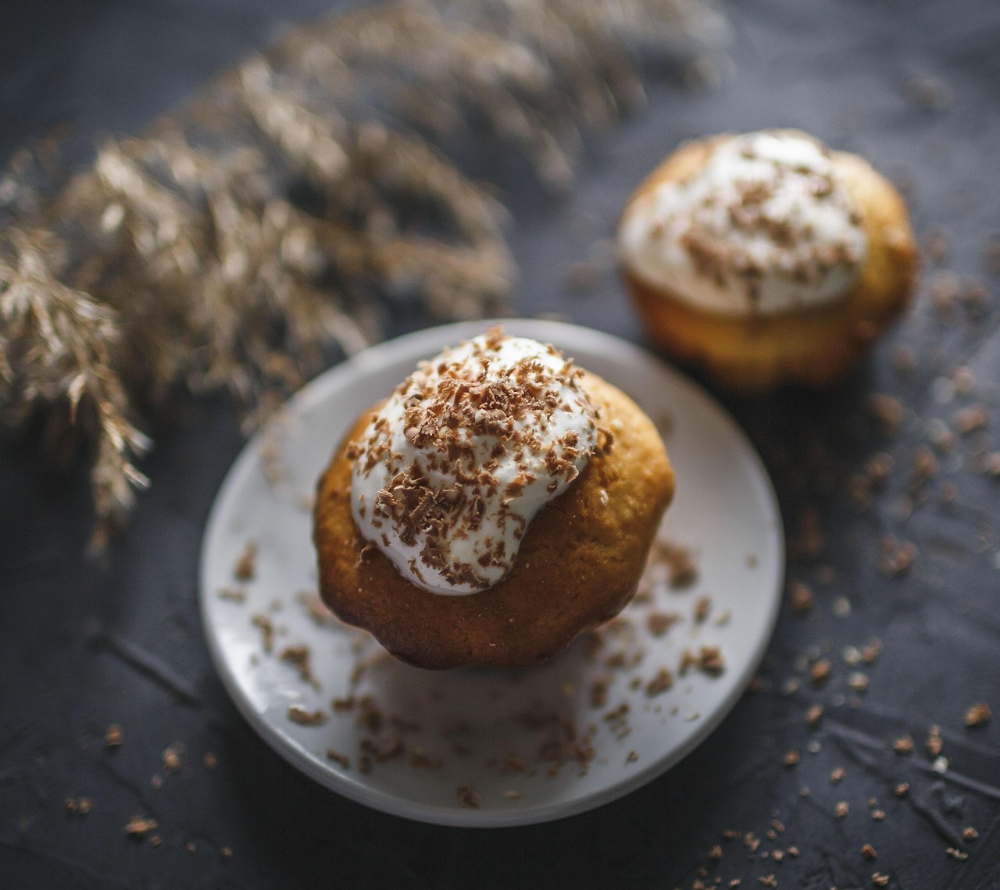

Cupcake de avena
Ingredientes
- 1 taza de avena
- 1/2 taza de harina común o integral.
- 1/2 taza de edulcorante
- 1/2 taza de leche vegetal
- 1 huevo.
- 1/4 taza de aceite de coco
- 1 cdta de polvo de hornear
- Esencia de vainilla
Paso a Paso
- Mezclar secos: en un bowl unir avena, harina, azúcar y polvo de hornear.
- 🥄 Agregar líquidos: incorporar huevo, leche, aceite y esencia de vainilla.
- 🍫 (Opcional) sumar chips de chocolate o frutos secos.
- 🧁 Llenar moldes: repartir la mezcla en pirotines hasta 3/4 de su altura.
- 🔥 Hornear: llevar al horno precalentado a 180 °C por unos 18–20 minutos (pinchá con un palillo, si sale seco ya están).
